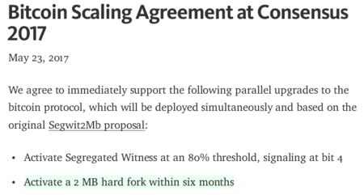
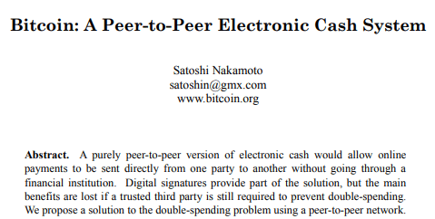
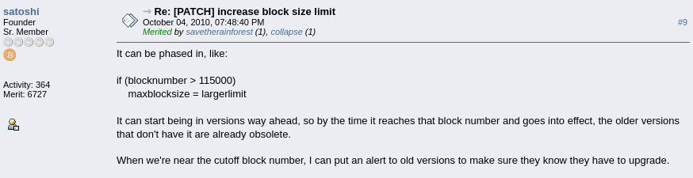
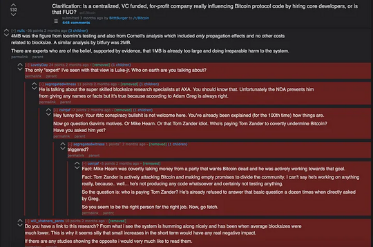
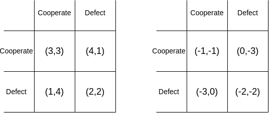
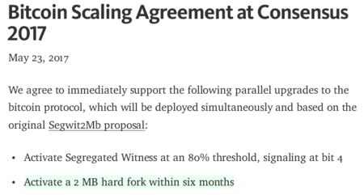
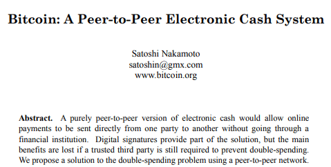
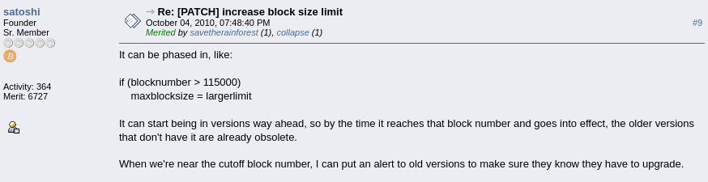
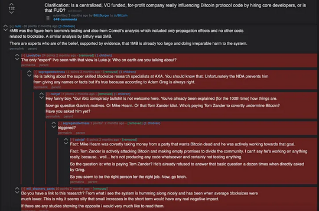
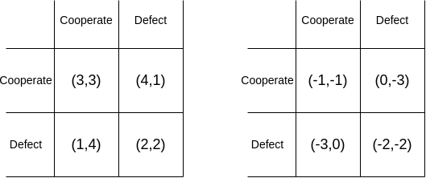

Some reflections on the Bitcoin block size war
2024 May 31
See all posts
Some reflections on the Bitcoin block size war
Recently I finished reading (or rather, audio-listening) the two main history books covering the great Bitcoin block size war of the 2010s, from opposite ends of the spectrum:
- Jonathan Bier's "The Blocksize War", telling the story from a pro-small-block perspective
- Roger Ver and Steve Patterson's "Hijacking Bitcoin", telling the story from a pro-big-block perspective
It was fascinating to read these two histories of an event that I personally lived through, and even to some extent participated in. While I was aware of the majority of the events that transpired, and the narratives with which each of the two sides viewed the nature of the conflict, there were still some fascinating bits that I did not know or had completely forgotten, and it was interesting to look at the situation with fresh eyes. Back then, I was a "big blocker", though of a pragmatic medium-block variety that opposed extreme increases or absolutist claims that fees should never be allowed to rise significantly above zero. Do I still support the views I held at the time? I was looking forward to see and find out.
In Jonathan Bier's telling, how did the small blockers see the block size war?
The original debate in the block size war centered around a simple question: should Bitcoin have a hard fork to raise the block size limit from its then-current value of 1 MB to a higher value, allowing Bitcoin to process more transactions and hence have lower fees, but at the cost of making the chain more difficult and costly to run a node for and verify?

"[If the block size were much bigger], you would need a big data center to run a node, and you won't be able to do it anonymously" - a key argument made in a video sponsored by Peter Todd advocating for keeping the block size small.
Bier's book gives me the impression that while the small blockers did care about this object-level question, favoring a conservative approach of increasing the block size only a little bit to ensure it remains easy to run a node, they cared even more about the meta-level question of how protocol-level issues like this get decided more generally. In their view, changes to the protocol (especially "hard forks") should only be done very rarely, and with a very high level from consensus of the users of the protocol.
Bitcoin is not trying to compete with payment processors - there are lots of those already. Rather, Bitcoin is trying to be something much more unique and special: a completely new type of currency, free from the control of central organizations and central banks. If Bitcoin started to have a highly active governance structure (which would be required to navigate controversial adjustments to block size parameters), or became vulnerable to coordinated manipulation by miners, exchanges or other big companies, it would lose this precious unique advantage forever.
In Bier's telling, the big blockers offended the small blockers most strongly precisely because they often attempted to get a relatively small number of big players together to legitimize and push through their preferred changes - anathema to the small blockers' view on how governance should be done.

The New York Agreement, signed by major Bitcoin exchanges, payment processors, miners and other companies in 2017. A key example of what small blockers consider to be an attempt to shift Bitcoin from rule by users to rule by corporate cabal.
In Roger Ver's telling, how did the big blockers see the block size war?
Big blockers generally focus on a key underlying object-level question: what is Bitcoin supposed to be? Is it supposed to be a store of value - digital gold, or a means of payment - digital cash? To them, it was clear to everyone from the start that the original vision, and the vision that big blockers all signed up for, was digital cash. It even says so in the whitepaper!

The big blockers also frequently cite two other things written by Satoshi:
- The simplified payment verification section of the whitepaper, which talks about how once blocks get very big, individual users can verify that their payments were included using Merkle proofs, without needing to verify the whole chain.
- A Bitcointalk quote advocating hard forks to phase in block size increases:

To them, the switch from focus on digital cash to digital gold was a pivot, one that was agreed upon by a small tight-knit group of core developers, who then assumed that because they thought about the issue and came to their conclusion internally, they had the right to impose their view on the entire project.
Small blockers did offer solutions for how Bitcoin can be cash and gold at the same time - namely, Bitcoin becomes a "layer 1" that focuses on being gold while "layer 2" protocols built on top of Bitcoin, like the Lightning Network, provide cheap payments without using the blockchain for every transaction. However, these solutions were highly inadequate in practice, and Ver spends several chapters deeply criticizing them. For example, even if everyone switched to Lightning, a block size increase would still eventually be required to onboard hundreds of millions of users. In addition, trustlessly receiving coins in Lightning requires having an online node, and making sure that your coins are not stolen requires checking the chain once a week. These complexities, Ver thought, would inevitably push users toward interacting with Lightning in centralized ways.
What is the key difference in their views?
Ver's depiction of the object-level debate matches that of the small blockers: both sides agree that small blockers more highly value ease of running a node, and that large blockers more highly value cheap transaction fees. They both acknowledge that there is room for a reasonable difference in beliefs, and that this difference is a key factor that motivated the debate.
But Bier and Ver's depictions of most of the deeper underlying issues are extremely different. To Bier, the small-block side is standing on behalf of users against small but powerful cabals of miners and exchanges trying to wrest control of the chain for their own benefit. Small blocks keep Bitcoin decentralized by making sure regular users can run nodes and verify the chain. To Ver, the big-block side is standing on behalf of users against small but powerful cabals of self-appointed high priests and VC-funded companies (namely, Blockstream) who profit from building the layer 2 solutions that the small-block roadmap necessitates. Large blocks keep Bitcoin decentralized by making sure users can continue to afford on-chain transactions without needing to depend on centralized layer-2 infrastructure.
The closest that I can see to the two sides even "agreeing on the terms of the debate" is that Bier's book accepts that many big blockers are well intentioned, even acknowledging that they have valid grievances regarding pro-small-block forum moderators censoring opposing views, but frequently criticizes the big block side for being incompetent, while Ver's book is more willing to ascribe malicious intent and even conspiracy theories to small blockers, but rarely criticizes their competence. This echoes a common political trope I have heard on quite a few occasions, that "the right thinks that the left is naive, the left thinks that the right is evil".
In my telling, how did I see the block size war? And how do I see it today?
Room 77, a former restaurant in Berlin that accepted Bitcoin for payments. It was the centerpiece of the Bitcoin Kiez, a region in Berlin where a large number of restaurants accepted Bitcoin. Unfortunately, the dream of Bitcoin for payments faded away over the latter part of the decade, and I consider rising fees to be a key culprit.
While I was experiencing the Bitcoin block size war first hand, I generally sided with the big blockers. My sympathy for the big block side centered on a few key points:
- A key initial promise of Bitcoin was digital cash, and high fees could kill that use case. While layer 2 protocols could in theory provide much lower fees, the whole concept was highly untested, and it was highly irresponsible for the small blockers to commit to the small-block roadmap given how little they knew about how well the Lightning Network would work in practice. These days, practical experience with the Lightning Network has made pessimistic perspectives much more common.
- I was not convinced by the small block side's "meta-level" story. Small blockers would often argue that "Bitcoin should be controlled by users", and "users don't support big blocks", but were never willing to pin down any specific way of defining who "users" are or measuring what they wanted. Big blockers implicitly tried to propose at least three different ways of counting users: hashpower, public statements by well-known companies, and social media discourse, and small blockers denounced each one. Big blockers did not organize the New York Agreement because they liked "cabals"; they organized the New York Agreement because small blockers insisted on "consensus" between "users" for any contentious change, and signed statements from major stakeholders were the only practical approach that the big blockers saw to try to actually do that.
- Segregated Witness, the proposal adopted by the small block side to slightly increase block size, was needlessly overcomplicated, compared to a simple hard fork block size increase. The small block side ended up adopting a religion of "soft forks good, hard forks bad" (which I strongly disagreed with), and designed their approach to increasing the block size to fit this rule, despite what Bier acknowledges are serious increases in complexity, to the point where many big blockers were unable to understand the proposal. I felt that small blockers were not just being "pro-carefulness", they were arbitrarily picking between different types of carefulness, picking one (no hard forks) at the expense of another (keeping a clean and simple code and spec) because it fit their agenda. Eventually, big blockers also ended up throwing away "clean and simple" and going into ideas like Bitcoin Unlimited's adaptive block size increase, a decision that Bier (rightfully) rips into them for.
- The small block side really was engaging in very uncool acts of social media censorship to impose their views, culminating in Theymos's infamous line "If 90% of /r/Bitcoin users find these policies to be intolerable, then I want these 90% of /r/Bitcoin users to leave."

Even relatively mild pro-big-block posts would frequently get deleted. Custom CSS was used to make these deleted posts invisible.
Ver's book focuses heavily on the first and the fourth and somewhat on the third, as well as theories of financially motivated malfeasance - namely, that the small blockers formed a company called Blockstream that would build layer 2 protocols on top of Bitcoin, and simultaneously advocated an ideology that the Bitcoin layer 1 should stay crippled, thereby making these commercial layer 2 networks necessary. Ver does not focus much on the philosophy of how Bitcoin should be governed, because to him the answer that "Bitcoin is governed by miners" is satisfying. This is a place where I agreed with neither side: I found the nebulous "consensus of users that we refuse to actually define" and the extreme "miners should control everything because they have aligned incentives" both unreasonable.
At the same time, I remember being immensely frustrated with big blockers on a few key points, and they were points that Bier's book echoed. One of the worst (both according to me and according to Bier) was that big blockers were never willing to agree on any realistic limiting principle for how big blocks should go. A common viewpoint was that "the block size was set by the market" - meaning, miners should make blocks as big as they want, and other miners can choose to accept or reject those blocks. I argued against this heavily, and pointed out that it's an extreme stretch of the concept of a "market" to say that such a mechanism is a market. Eventually, when the big blockers split off into their own independent chain (Bitcoin Cash), they ended up moving away from this view, and adding a block size limit of 32 MB.
At the time, I actually did have a principled way of reasoning about how to decide on block size limits. Quoting a post from 2018:
Bitcoin favors maximum predictability of the cost of reading the blockchain, at the expense of the minimum possible amount of predictability of the cost of writing to the blockchain, with predictably very healthy results in the former metric and disastrous results in the latter metric. Ethereum, with its current governance model, favors medium predictability of both.
I later repeated this perspective in a tweet in 2022. In essence, the philosophy is: we should balance between increasing the cost of writing to the chain (ie. transaction fees) and the cost of reading the chain (ie. software requirements for a node). Ideally, if demand for using a blockchain increases by 100x, we should split the pain halfway, and let the block size increase increase by 10x and the fees increase by 10x (demand elasticity for transaction fees is close enough to 1 that this kind-of works in practice).

Ethereum actually did end up taking a medium-block approach: the chain's capacity has increased by roughly 5.3x since it launched in 2015 (perhaps 7x if you count calldata repricings and blobs), and at the same time fees increased from almost nothing to a significant-but-not-too-high level.
However, this kind of compromise-oriented (or "concave") approach never caught on with either faction; perhaps it felt too "central-planny" for one side and too "wishy-washy" for the other. I feel like big blockers were more at fault than small blockers here; the small blockers were open to modest block size increases at the beginning (eg. Adam Back's 2/4/8 plan), and it was big blockers that were unwilling to compromise, and moved quickly from advocating a single increase to a specific larger number to advocating an overarching philosophy that pretty much any nontrivial limitation of the block size is illegitimate.
Big blockers also started arguing that miners should be in charge of Bitcoin - a philosophy that Bier effectively criticizes, by pointing out that they would probably quickly abandon their views if the miners tried changing the protocol rules to do something other than increasing the block size - say, giving themselves more rewards.
A major line of criticism of big blockers in Bier's book was their repeated displays of incompetence. Bitcoin Classic was not well-written code, Bitcoin Unlimited was needlessly overly complicated, for a long time they did not include wipeout protection and did not seem to understand that this choice greatly hurts their chance of success (!!), and they had serious security vulnerabilities. They loudly shouted about the need for multiple implementations of the Bitcoin software - a principle that I agree with and a principle that Ethereum has adopted - but their "alternative clients" were really just forks of Bitcoin Core with a few lines changed to implement a block size increase. In Bier's telling, their repeated faux pas on both code and economics ended up turning away more and more supporters over time. Major big blockers falling for Craig Wright fraudulently claiming to be Satoshi further discredited them.
Craig Wright, a scammer pretending to be Satoshi. He frequently used legal threats to take down criticism, which is why my fork is the largest still-online copy of the Cult of Craig repository which documented proof that he's fake. Unfortunately, many big blockers fell for Craig's antics, because Craig toed the big-block party line, and said things that the big blockers wanted to hear.
In general, reading through the two books, I found myself agreeing with Ver more often on big-picture questions, but with Bier more often on individual details. In my view, big blockers were right on the central question that blocks needed to be bigger, and that it was best to accomplish this with a clean simple hard fork like Satoshi described, but small blockers committed far fewer embarrassing technical faux pas, and had fewer positions that led to absurd outcomes if you tried to take them to their logical conclusion.
The block size war as a one-sided competence trap
The combined picture that I get from reading these two books is a political tragedy that I feel like I have seen over and over again in all kinds of contexts, including cryptocurrencies, corporations and national politics:
One side monopolizes all the competent people, but uses its power to push a narrow and biased perspective; the other side correctly recognizes that something is wrong, but engulfs itself in a focus on opposition, failing to develop the technical ability to execute on its own.
In many such situations, the first group is criticized as being authoritarian, but when you ask its (often quite many) supporters why they support it, their response is that the other side only knows how to complain; they would completely flop within days if they were to actually gain power.
This is to some extent not the opposition's fault: it's hard to become good at executing without having a platform to execute from and gain experience. But in the block size debate in particular, the big block side appears to have largely not even realized the need to be competent at executing - they thought that they could win solely by sheer force of being right on the block size question. Big blockers ended up paying a heavy price for their focus on opposing over building in multiple ways: even when they split off into their own chain with Bitcoin Cash, they ended up splitting in half two more times before the community finally stabilized.
I'll label this problem the one-sided competence trap. It feels like a fundamental problem for anyone trying to build a political entity or project or community that they wish to be democratic or pluralistic. Smart people want to work with other smart people. If two distinct groups are roughly equally matched, people would gravitate to the one that better fits their values, and the equilibrium can be stable. But if it goes too far in one direction, it flips into a different equilibrium, and it seems very hard to get it to flip back. To some degree, one-sided competence traps can be mitigated by an opposition simply realizing that the problem exists and that they have to build up competence intentionally. Often, an opposition movement does not even get to this step. But sometimes simply recognizing the problem is not enough. We would benefit a lot from having more robust and deeper ways of preventing and getting out of one-sided competence traps.
Less conflict, more technology
One incredibly glaring omission from both books stood out to me more than anything else: the word "ZK-SNARK" appeared exactly zero times in both books. There is not much excuse for this: even by the mid-2010s, ZK-SNARKs and their potential to revolutionize scalability (and privacy) were well known. Zcash launched in October 2016. The scalability implications of ZK-SNARKs were explored a little bit by Gregory Maxwell in 2013, but they did not seem to get taken into account at all in discussions of Bitcoin's future roadmap.
The ultimate diffuser of political tension is not compromise, but rather new technology: the discovery of fundamentally new approaches that give both sides more of what they want at the same time. We've seen several instances of this in Ethereum. A few that come to mind are:
- Justin Drake's push to embrace BLS aggregation, allowing Ethereum's proof of stake to process many more validators, and thereby decrease the min staking balance from 1500 to 32, with quite little downside. More recently, work on signature merging promises to take this further.
- EIP-7702, which accomplished the goals of ERC-3074 in a way that is significantly more forward-compatible with smart contract wallets, and thereby helped to tone down a long-standing dispute.
- Multidimensional gas, starting with its implementation for blobs, has already helped increase Ethereum's capability to hold rollup data, without increasing the size of worst-case blocks, and thereby keeping security risks minimized.
When an ecosystem stops embracing new technology, it inevitably stagnates, and becomes more contentious at the same time: a political debate between "I get 10 more apples" vs "you get 10 more apples" inherently causes much less strife than a debate between "I give up 10 apples" vs "you give up 10 apples". Losses are more painful than gains are pleasant, and people are more willing to "break the glass" of their shared political commons in order to avoid losses. This is a key reason why I'm quite uncomfortable with ideas like degrowth and the notion that "we can't use technological solutions to solve social problems": there's a pretty strong reason to believe that fighting over who wins more rather than fighting over who loses less really is much better for social harmony.

In economic theory, there is no difference between these two prisoner's dilemmas: the game on the right can be viewed as being the game on the left plus a separate (irrelevant) step where both players lose four points regardless of how they act. But in human psychology, the two games can be very different.
One key question for Bitcoin going forward is, will Bitcoin be able to become a tech-forward ecosystem. The development of Inscriptions and later BitVM have created new possibilities for layer 2s, improving on what can be done with Lightning. Hopefully, Udi Wertheimer is correct with his theory that ETH getting an ETF means the death of Saylorism, and a renewed realization that Bitcoin needs to improve technologically.
Why do I care about this?
I care about examining the successes and failures in Bitcoin not because I want to put Bitcoin down as a way to lift Ethereum up; in fact, as someone who loves trying to understand social and political issues, I find it a feature of Bitcoin that it's sociologically complex enough that it can have internal debates and splits that are so rich and fascinating that you can write two entire books on them. Rather, I care about analyzing these issues because both Ethereum, and other digital (and even physical) communities that I care about, stand to learn a lot from understanding what happened, what went well, and what could have done better.
Ethereum's focus on client diversity was born from watching the failures that arose from Bitcoin having a single client team. Its version of layer 2s was born from understanding how the limitations of Bitcoin lead to limitations in what kinds of layer 2s with what trust properties are possible to build on top of it. More generally, Ethereum's explicit attempt to foster a pluralistic ecosystem is in large part an attempt at avoiding one-sided competence traps.
Another example that comes to mind is the network state movement. Network states are a new strategy for a kind of digital secession, allowing communities that have aligned values to gain some independence from mainstream society and build out their own visions for the future of culture and technology. But the experience of (post-fork) Bitcoin Cash shows that movements organized around forking to resolve problems have a common failure mode: they can end up splitting again and again and never actually managing to cooperate. Bitcoin Cash's experience carries lessons that go far beyond Bitcoin Cash. Like rebel cryptocurrencies, rebel network states need to learn to actually execute and build, and not just hold parties and vibe and share memes comparing modern brutalism to 16th-century European architecture on Twitter. Zuzalu was in part my own attempt to instigate change in this direction.
I recommend reading both Bier's The Blocksize War and Patterson and Ver's Hijacking Bitcoin to understand one of the defining moments of Bitcoin's history. Particularly, I recommend reading the two books with the mindset that this is not just about Bitcoin - rather, this was the first true high-stakes civil war of a "digital nation", and the experiences carry important lessons for other digital nations that we will be building in the decades to come.
Some reflections on the Bitcoin block size war
2024 May 31 See all postsRecently I finished reading (or rather, audio-listening) the two main history books covering the great Bitcoin block size war of the 2010s, from opposite ends of the spectrum:
It was fascinating to read these two histories of an event that I personally lived through, and even to some extent participated in. While I was aware of the majority of the events that transpired, and the narratives with which each of the two sides viewed the nature of the conflict, there were still some fascinating bits that I did not know or had completely forgotten, and it was interesting to look at the situation with fresh eyes. Back then, I was a "big blocker", though of a pragmatic medium-block variety that opposed extreme increases or absolutist claims that fees should never be allowed to rise significantly above zero. Do I still support the views I held at the time? I was looking forward to see and find out.
In Jonathan Bier's telling, how did the small blockers see the block size war?
The original debate in the block size war centered around a simple question: should Bitcoin have a hard fork to raise the block size limit from its then-current value of 1 MB to a higher value, allowing Bitcoin to process more transactions and hence have lower fees, but at the cost of making the chain more difficult and costly to run a node for and verify?
"[If the block size were much bigger], you would need a big data center to run a node, and you won't be able to do it anonymously" - a key argument made in a video sponsored by Peter Todd advocating for keeping the block size small.
Bier's book gives me the impression that while the small blockers did care about this object-level question, favoring a conservative approach of increasing the block size only a little bit to ensure it remains easy to run a node, they cared even more about the meta-level question of how protocol-level issues like this get decided more generally. In their view, changes to the protocol (especially "hard forks") should only be done very rarely, and with a very high level from consensus of the users of the protocol.
Bitcoin is not trying to compete with payment processors - there are lots of those already. Rather, Bitcoin is trying to be something much more unique and special: a completely new type of currency, free from the control of central organizations and central banks. If Bitcoin started to have a highly active governance structure (which would be required to navigate controversial adjustments to block size parameters), or became vulnerable to coordinated manipulation by miners, exchanges or other big companies, it would lose this precious unique advantage forever.
In Bier's telling, the big blockers offended the small blockers most strongly precisely because they often attempted to get a relatively small number of big players together to legitimize and push through their preferred changes - anathema to the small blockers' view on how governance should be done.

The New York Agreement, signed by major Bitcoin exchanges, payment processors, miners and other companies in 2017. A key example of what small blockers consider to be an attempt to shift Bitcoin from rule by users to rule by corporate cabal.
In Roger Ver's telling, how did the big blockers see the block size war?
Big blockers generally focus on a key underlying object-level question: what is Bitcoin supposed to be? Is it supposed to be a store of value - digital gold, or a means of payment - digital cash? To them, it was clear to everyone from the start that the original vision, and the vision that big blockers all signed up for, was digital cash. It even says so in the whitepaper!

The big blockers also frequently cite two other things written by Satoshi:

To them, the switch from focus on digital cash to digital gold was a pivot, one that was agreed upon by a small tight-knit group of core developers, who then assumed that because they thought about the issue and came to their conclusion internally, they had the right to impose their view on the entire project.
Small blockers did offer solutions for how Bitcoin can be cash and gold at the same time - namely, Bitcoin becomes a "layer 1" that focuses on being gold while "layer 2" protocols built on top of Bitcoin, like the Lightning Network, provide cheap payments without using the blockchain for every transaction. However, these solutions were highly inadequate in practice, and Ver spends several chapters deeply criticizing them. For example, even if everyone switched to Lightning, a block size increase would still eventually be required to onboard hundreds of millions of users. In addition, trustlessly receiving coins in Lightning requires having an online node, and making sure that your coins are not stolen requires checking the chain once a week. These complexities, Ver thought, would inevitably push users toward interacting with Lightning in centralized ways.
What is the key difference in their views?
Ver's depiction of the object-level debate matches that of the small blockers: both sides agree that small blockers more highly value ease of running a node, and that large blockers more highly value cheap transaction fees. They both acknowledge that there is room for a reasonable difference in beliefs, and that this difference is a key factor that motivated the debate.
But Bier and Ver's depictions of most of the deeper underlying issues are extremely different. To Bier, the small-block side is standing on behalf of users against small but powerful cabals of miners and exchanges trying to wrest control of the chain for their own benefit. Small blocks keep Bitcoin decentralized by making sure regular users can run nodes and verify the chain. To Ver, the big-block side is standing on behalf of users against small but powerful cabals of self-appointed high priests and VC-funded companies (namely, Blockstream) who profit from building the layer 2 solutions that the small-block roadmap necessitates. Large blocks keep Bitcoin decentralized by making sure users can continue to afford on-chain transactions without needing to depend on centralized layer-2 infrastructure.
The closest that I can see to the two sides even "agreeing on the terms of the debate" is that Bier's book accepts that many big blockers are well intentioned, even acknowledging that they have valid grievances regarding pro-small-block forum moderators censoring opposing views, but frequently criticizes the big block side for being incompetent, while Ver's book is more willing to ascribe malicious intent and even conspiracy theories to small blockers, but rarely criticizes their competence. This echoes a common political trope I have heard on quite a few occasions, that "the right thinks that the left is naive, the left thinks that the right is evil".
In my telling, how did I see the block size war? And how do I see it today?
Room 77, a former restaurant in Berlin that accepted Bitcoin for payments. It was the centerpiece of the Bitcoin Kiez, a region in Berlin where a large number of restaurants accepted Bitcoin. Unfortunately, the dream of Bitcoin for payments faded away over the latter part of the decade, and I consider rising fees to be a key culprit.
While I was experiencing the Bitcoin block size war first hand, I generally sided with the big blockers. My sympathy for the big block side centered on a few key points:

Even relatively mild pro-big-block posts would frequently get deleted. Custom CSS was used to make these deleted posts invisible.
Ver's book focuses heavily on the first and the fourth and somewhat on the third, as well as theories of financially motivated malfeasance - namely, that the small blockers formed a company called Blockstream that would build layer 2 protocols on top of Bitcoin, and simultaneously advocated an ideology that the Bitcoin layer 1 should stay crippled, thereby making these commercial layer 2 networks necessary. Ver does not focus much on the philosophy of how Bitcoin should be governed, because to him the answer that "Bitcoin is governed by miners" is satisfying. This is a place where I agreed with neither side: I found the nebulous "consensus of users that we refuse to actually define" and the extreme "miners should control everything because they have aligned incentives" both unreasonable.
At the same time, I remember being immensely frustrated with big blockers on a few key points, and they were points that Bier's book echoed. One of the worst (both according to me and according to Bier) was that big blockers were never willing to agree on any realistic limiting principle for how big blocks should go. A common viewpoint was that "the block size was set by the market" - meaning, miners should make blocks as big as they want, and other miners can choose to accept or reject those blocks. I argued against this heavily, and pointed out that it's an extreme stretch of the concept of a "market" to say that such a mechanism is a market. Eventually, when the big blockers split off into their own independent chain (Bitcoin Cash), they ended up moving away from this view, and adding a block size limit of 32 MB.
At the time, I actually did have a principled way of reasoning about how to decide on block size limits. Quoting a post from 2018:
I later repeated this perspective in a tweet in 2022. In essence, the philosophy is: we should balance between increasing the cost of writing to the chain (ie. transaction fees) and the cost of reading the chain (ie. software requirements for a node). Ideally, if demand for using a blockchain increases by 100x, we should split the pain halfway, and let the block size increase increase by 10x and the fees increase by 10x (demand elasticity for transaction fees is close enough to 1 that this kind-of works in practice).
Ethereum actually did end up taking a medium-block approach: the chain's capacity has increased by roughly 5.3x since it launched in 2015 (perhaps 7x if you count calldata repricings and blobs), and at the same time fees increased from almost nothing to a significant-but-not-too-high level.
However, this kind of compromise-oriented (or "concave") approach never caught on with either faction; perhaps it felt too "central-planny" for one side and too "wishy-washy" for the other. I feel like big blockers were more at fault than small blockers here; the small blockers were open to modest block size increases at the beginning (eg. Adam Back's 2/4/8 plan), and it was big blockers that were unwilling to compromise, and moved quickly from advocating a single increase to a specific larger number to advocating an overarching philosophy that pretty much any nontrivial limitation of the block size is illegitimate.
Big blockers also started arguing that miners should be in charge of Bitcoin - a philosophy that Bier effectively criticizes, by pointing out that they would probably quickly abandon their views if the miners tried changing the protocol rules to do something other than increasing the block size - say, giving themselves more rewards.
A major line of criticism of big blockers in Bier's book was their repeated displays of incompetence. Bitcoin Classic was not well-written code, Bitcoin Unlimited was needlessly overly complicated, for a long time they did not include wipeout protection and did not seem to understand that this choice greatly hurts their chance of success (!!), and they had serious security vulnerabilities. They loudly shouted about the need for multiple implementations of the Bitcoin software - a principle that I agree with and a principle that Ethereum has adopted - but their "alternative clients" were really just forks of Bitcoin Core with a few lines changed to implement a block size increase. In Bier's telling, their repeated faux pas on both code and economics ended up turning away more and more supporters over time. Major big blockers falling for Craig Wright fraudulently claiming to be Satoshi further discredited them.
Craig Wright, a scammer pretending to be Satoshi. He frequently used legal threats to take down criticism, which is why my fork is the largest still-online copy of the Cult of Craig repository which documented proof that he's fake. Unfortunately, many big blockers fell for Craig's antics, because Craig toed the big-block party line, and said things that the big blockers wanted to hear.
In general, reading through the two books, I found myself agreeing with Ver more often on big-picture questions, but with Bier more often on individual details. In my view, big blockers were right on the central question that blocks needed to be bigger, and that it was best to accomplish this with a clean simple hard fork like Satoshi described, but small blockers committed far fewer embarrassing technical faux pas, and had fewer positions that led to absurd outcomes if you tried to take them to their logical conclusion.
The block size war as a one-sided competence trap
The combined picture that I get from reading these two books is a political tragedy that I feel like I have seen over and over again in all kinds of contexts, including cryptocurrencies, corporations and national politics:
One side monopolizes all the competent people, but uses its power to push a narrow and biased perspective; the other side correctly recognizes that something is wrong, but engulfs itself in a focus on opposition, failing to develop the technical ability to execute on its own.
In many such situations, the first group is criticized as being authoritarian, but when you ask its (often quite many) supporters why they support it, their response is that the other side only knows how to complain; they would completely flop within days if they were to actually gain power.
This is to some extent not the opposition's fault: it's hard to become good at executing without having a platform to execute from and gain experience. But in the block size debate in particular, the big block side appears to have largely not even realized the need to be competent at executing - they thought that they could win solely by sheer force of being right on the block size question. Big blockers ended up paying a heavy price for their focus on opposing over building in multiple ways: even when they split off into their own chain with Bitcoin Cash, they ended up splitting in half two more times before the community finally stabilized.
I'll label this problem the one-sided competence trap. It feels like a fundamental problem for anyone trying to build a political entity or project or community that they wish to be democratic or pluralistic. Smart people want to work with other smart people. If two distinct groups are roughly equally matched, people would gravitate to the one that better fits their values, and the equilibrium can be stable. But if it goes too far in one direction, it flips into a different equilibrium, and it seems very hard to get it to flip back. To some degree, one-sided competence traps can be mitigated by an opposition simply realizing that the problem exists and that they have to build up competence intentionally. Often, an opposition movement does not even get to this step. But sometimes simply recognizing the problem is not enough. We would benefit a lot from having more robust and deeper ways of preventing and getting out of one-sided competence traps.
Less conflict, more technology
One incredibly glaring omission from both books stood out to me more than anything else: the word "ZK-SNARK" appeared exactly zero times in both books. There is not much excuse for this: even by the mid-2010s, ZK-SNARKs and their potential to revolutionize scalability (and privacy) were well known. Zcash launched in October 2016. The scalability implications of ZK-SNARKs were explored a little bit by Gregory Maxwell in 2013, but they did not seem to get taken into account at all in discussions of Bitcoin's future roadmap.
The ultimate diffuser of political tension is not compromise, but rather new technology: the discovery of fundamentally new approaches that give both sides more of what they want at the same time. We've seen several instances of this in Ethereum. A few that come to mind are:
When an ecosystem stops embracing new technology, it inevitably stagnates, and becomes more contentious at the same time: a political debate between "I get 10 more apples" vs "you get 10 more apples" inherently causes much less strife than a debate between "I give up 10 apples" vs "you give up 10 apples". Losses are more painful than gains are pleasant, and people are more willing to "break the glass" of their shared political commons in order to avoid losses. This is a key reason why I'm quite uncomfortable with ideas like degrowth and the notion that "we can't use technological solutions to solve social problems": there's a pretty strong reason to believe that fighting over who wins more rather than fighting over who loses less really is much better for social harmony.

In economic theory, there is no difference between these two prisoner's dilemmas: the game on the right can be viewed as being the game on the left plus a separate (irrelevant) step where both players lose four points regardless of how they act. But in human psychology, the two games can be very different.
One key question for Bitcoin going forward is, will Bitcoin be able to become a tech-forward ecosystem. The development of Inscriptions and later BitVM have created new possibilities for layer 2s, improving on what can be done with Lightning. Hopefully, Udi Wertheimer is correct with his theory that ETH getting an ETF means the death of Saylorism, and a renewed realization that Bitcoin needs to improve technologically.
Why do I care about this?
I care about examining the successes and failures in Bitcoin not because I want to put Bitcoin down as a way to lift Ethereum up; in fact, as someone who loves trying to understand social and political issues, I find it a feature of Bitcoin that it's sociologically complex enough that it can have internal debates and splits that are so rich and fascinating that you can write two entire books on them. Rather, I care about analyzing these issues because both Ethereum, and other digital (and even physical) communities that I care about, stand to learn a lot from understanding what happened, what went well, and what could have done better.
Ethereum's focus on client diversity was born from watching the failures that arose from Bitcoin having a single client team. Its version of layer 2s was born from understanding how the limitations of Bitcoin lead to limitations in what kinds of layer 2s with what trust properties are possible to build on top of it. More generally, Ethereum's explicit attempt to foster a pluralistic ecosystem is in large part an attempt at avoiding one-sided competence traps.
Another example that comes to mind is the network state movement. Network states are a new strategy for a kind of digital secession, allowing communities that have aligned values to gain some independence from mainstream society and build out their own visions for the future of culture and technology. But the experience of (post-fork) Bitcoin Cash shows that movements organized around forking to resolve problems have a common failure mode: they can end up splitting again and again and never actually managing to cooperate. Bitcoin Cash's experience carries lessons that go far beyond Bitcoin Cash. Like rebel cryptocurrencies, rebel network states need to learn to actually execute and build, and not just hold parties and vibe and share memes comparing modern brutalism to 16th-century European architecture on Twitter. Zuzalu was in part my own attempt to instigate change in this direction.
I recommend reading both Bier's The Blocksize War and Patterson and Ver's Hijacking Bitcoin to understand one of the defining moments of Bitcoin's history. Particularly, I recommend reading the two books with the mindset that this is not just about Bitcoin - rather, this was the first true high-stakes civil war of a "digital nation", and the experiences carry important lessons for other digital nations that we will be building in the decades to come.